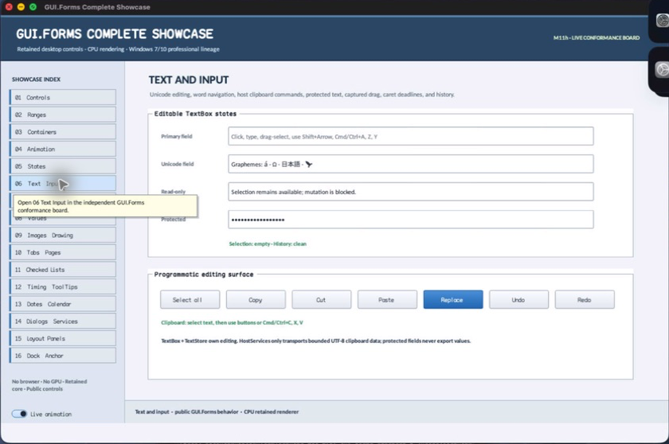

struct · library
TextSelection
TextSelection is TextBox's normalized byte-boundary selection value. It keeps anchor and active endpoints distinct while exposing ordered ranges for mutation and painting.
OBSERVED: bundle 004 split and Unicode edit-policy review; M4 build, focused tests, and Screen Sharing passheader-only or distributed
Visual evidence

Ownership and hierarchy
- Hierarchy
- TextSelection
- Declaration
- include/gui_forms/controls/panel/text_box/text_box.hpp:17
- Definition
- inline/header-only
Declared methods
start public
[[nodiscard]] Utf8Offset start() const noexceptReturns the lesser UTF-8 byte boundary regardless of selection direction.
end public
[[nodiscard]] Utf8Offset end() const noexceptReturns the greater UTF-8 byte boundary regardless of selection direction.
length public
[[nodiscard]] std::size_t length() const noexceptReturns the selected byte count between normalized endpoints.
empty public
[[nodiscard]] bool empty() const noexceptReports whether anchor and active endpoints identify the same insertion position.
operator== public
friend constexpr bool operator==(const TextSelection&, const TextSelection&) = defaultCompares both directional endpoints exactly.